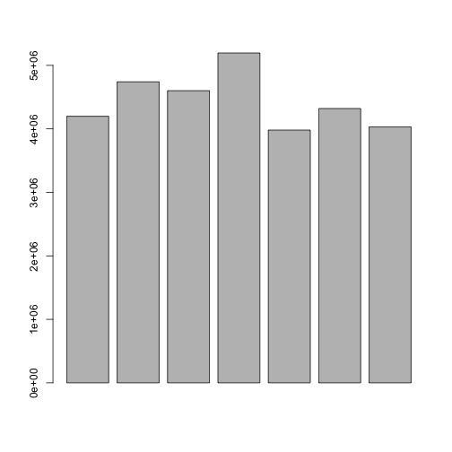
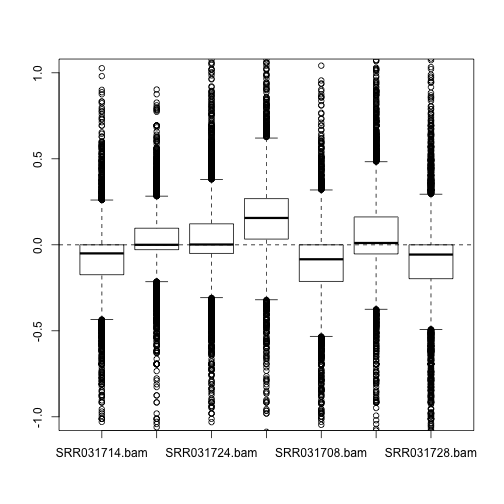
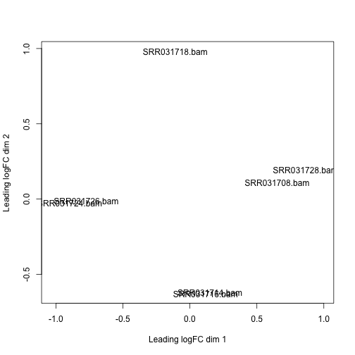
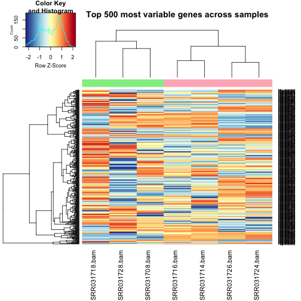
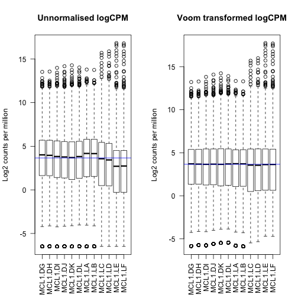

RNA-seq analysis in R
Solutions: Analysis of Pasilla Knock-down Experiment in Drosophila
Author: Belinda Phipson
Data files needed
- counts_Drosophila.txt
- targets.txt
Libraries needed
- limma
- edgeR
- org.Dm.eg.db
- EDASeq
- gplots
- RColorBrewer
Introduction
The RNA-Seq data we will be analysing today come from this published paper:
Brooks, A.N., Yang, L., Duff, M.O., Hansen, K.D., Park, J.W., Dudoit, S., Brenner, S.E. and Graveley, B.R. (2011) Conservation of an rna regulatory map between drosophila and mammals. Genome Research, 21(2), 193-202.
http://www.ncbi.nlm.nih.gov/pubmed/20921232
This is a publicly available dataset, deposited in the Short Read Archive. The RNA-sequence data are available from GEO under accession nos. GSM461176-GSM461181. The authors combined RNAi and RNASeq to identify exons regulated by Pasilla, the Drosophila melanogaster ortholog of mammalian NOVA1 and NOVA2. They showed that the RNA regulatory map of Pasilla and NOVA1/2 is highly conserved between insects and mammals. NOVA1 and NOVA2 are best known for being involved in alternative splicing. Cells from S2-DRSC, which is an embryonic cell line, were cultured and subjected to a treatment in order to knock-down Pasilla. The four untreated and three treated RNAi samples were used in the analysis. The treated samples had Pasilla knocked down by approximately 60% compared to the untreated samples. Some of the samples had undergone paired end sequencing while other samples were sequenced from one end only.
The reads were aligned to the Drosophila reference genome, downloaded from Ensembl, using the tophat aligner. The reads were summarised at the gene-level using htseq-count, a function from the tool HTSeq (http://wwwhuber.embl.de/users/anders/HTSeq/doc/overview.html).
For the purpose of today’s workshop, we will be analysing the gene level counts.
Reading data into R
First, let’s load all the libraries we will need today.
library(limma)
library(edgeR)
library(EDASeq)
library(gplots)
library(RColorBrewer)
library(org.Dm.eg.db)Warning: package 'DBI' was built under R version 3.2.5
Next, read in the data and targets file:
counts <- read.delim(file="data/counts_Drosophila.txt")
targets <- read.delim(file="data/targets_drosophila.txt")Check that the data has read in correctly
head(counts) SRR031714.bam SRR031716.bam SRR031724.bam SRR031726.bam
FBgn0037213 157 142 213 291
FBgn0000500 0 3 4 5
FBgn0053294 14 18 13 19
FBgn0037215 1666 1948 1662 1833
FBgn0037217 13 19 18 23
FBgn0037218 732 755 803 906
SRR031708.bam SRR031718.bam SRR031728.bam
FBgn0037213 123 225 164
FBgn0000500 2 1 1
FBgn0053294 22 34 22
FBgn0037215 1625 1701 1870
FBgn0037217 15 15 17
FBgn0037218 695 767 793
targets SampleName Group Library
1 SRR031714 Untreated PE
2 SRR031716 Untreated PE
3 SRR031724 Treated PE
4 SRR031726 Treated PE
5 SRR031708 Untreated SE
6 SRR031718 Treated SE
7 SRR031728 Untreated SE
Filtering out lowly expressed genes
Our main interest is in testing the treated versus untreated groups. To check how many samples we have in each group we can use the table command.
table(targets$Group)
Treated Untreated
3 4
The minimum sample size is 3. Let’s check the relationship between CPM and counts to see what CPM threshold we should be imposing. Recall we’re looking for a CPM that corresponds to a count of roughly 10-15.
mycpm <- cpm(counts)
plot(counts[,1],mycpm[,1],xlim=c(0,20),ylim=c(0,5))
abline(v=10,col=2)
abline(h=2,col=4)
We can filter on a CPM of 2 or 3 in at least 3 samples.
thresh <- mycpm > 2
keep <- rowSums(thresh) >= 3
table(keep)keep
FALSE TRUE
7345 7524
counts.keep <- counts[keep,]
dim(counts.keep)[1] 7524 7
We are filtering out about half our genes.
Convert to DGEList object
y <- DGEList(counts.keep)Quality control
Let’s do a number of quality control plots.
First, check the library sizes:
barplot(y$samples$lib.size)
Next check the distribution of the counts using an relative log expression plot:
plotRLE(y$counts)
It’s a bit hard to see what’s going on so we can zoom in to the y axis
plotRLE(y$counts,ylim=c(-1,1))
We can colour by our groups, or by the different library prep.
par(mfrow=c(1,2))
group.col <- c("red","blue")[targets$Group]
plotRLE(y$counts,ylim=c(-1,1),col=group.col)
lib.col <- c("light pink","light green")[targets$Library]
plotRLE(y$counts,ylim=c(-1,1),col=lib.col)
Looks like some bias going on!
Finally, let’s check our MDS plots.
par(mfrow=c(1,1))
plotMDS(y)
par(mfrow=c(1,2))
plotMDS(y,col=group.col)
legend("topright",legend=levels(targets$Group),fill=c("red","blue"))
plotMDS(y,col=lib.col)
legend("topleft",legend=levels(targets$Library),fill=c("light pink","light green"))
Hierarchical clustering with heatmap.2
First we need a matrix of log counts:
logcounts <- cpm(y,log=TRUE)Get variances for genes:
var_genes <- apply(logcounts, 1, var)Get top 500 most variable
select_var <- names(sort(var_genes, decreasing=TRUE))[1:500]highly_variable_lcpm <- logcounts[select_var,]
dim(highly_variable_lcpm)[1] 500 7
mypalette <- brewer.pal(11,"RdYlBu")
morecols <- colorRampPalette(mypalette)
# Plot the heatmap
heatmap.2(highly_variable_lcpm,col=rev(morecols(50)),trace="none", main="Top 500 most variable genes across samples",ColSideColors=group.col,scale="row",margins=c(10,5))
heatmap.2(highly_variable_lcpm,col=rev(morecols(50)),trace="none", main="Top 500 most variable genes across samples",ColSideColors=lib.col,scale="row",margins=c(10,5))
Normalisation
Let’s do TMM normalisation
y <- calcNormFactors(y)
y$samples group lib.size norm.factors
SRR031714.bam 1 4198181 0.9805029
SRR031716.bam 1 4740969 0.9566649
SRR031724.bam 1 4601291 0.9936278
SRR031726.bam 1 5195516 1.0019699
SRR031708.bam 1 3980986 1.0036556
SRR031718.bam 1 4320527 1.0556860
SRR031728.bam 1 4031608 1.0106328
par(mfrow=c(1,2))
plotMD(logcounts,column=2)
abline(h=0,col="grey")
plotMD(y,column = 2)
abline(h=0,col="grey")
Differential expression
Set up design matrix
We want to test for differences between the treated and untreated samples. However, we know that the library preparation adds variability to the data, so we need to account for it in our model. We do this by modelling both Group and Library as variables in our design matrix. This is known as an additive model.
design <- model.matrix(~targets$Library + targets$Group)
design (Intercept) targets$LibrarySE targets$GroupUntreated
1 1 0 1
2 1 0 1
3 1 0 0
4 1 0 0
5 1 1 1
6 1 1 0
7 1 1 1
attr(,"assign")
[1] 0 1 2
attr(,"contrasts")
attr(,"contrasts")$`targets$Library`
[1] "contr.treatment"
attr(,"contrasts")$`targets$Group`
[1] "contr.treatment"
colnames(design) <- c("Int","SEvsPE","UVsT")Voom transform the data
par(mfrow=c(1,1))
v <- voom(y,design,plot=TRUE)
par(mfrow=c(1,2))
boxplot(logcounts)
abline(h=median(logcounts),col=4)
boxplot(v$E)
abline(h=median(v$E),col=4)
Test for differential expression
fit <- lmFit(v,design)
fit <- eBayes(fit)
results <- decideTests(fit)
summary(results) Int SEvsPE UVsT
-1 4 125 440
0 66 7142 6641
1 7454 257 443
topTable(fit,coef=3,sort.by="p") logFC AveExpr t P.Value adj.P.Val
FBgn0025111 -2.863110 6.253448 -31.24326 9.756044e-13 4.734428e-09
FBgn0003360 3.089242 7.778378 30.57062 1.258487e-12 4.734428e-09
FBgn0026562 2.422219 11.359837 24.25592 1.868075e-11 4.685133e-08
FBgn0029167 2.247086 7.825170 21.77945 6.509505e-11 1.224438e-07
FBgn0035085 2.677008 5.180607 18.97509 3.188148e-10 4.797524e-07
FBgn0039155 4.272254 4.800907 17.42222 8.476440e-10 1.062946e-06
FBgn0040091 1.559497 6.245766 15.43293 3.363833e-09 3.615639e-06
FBgn0023479 1.576335 7.768886 15.06473 4.419245e-09 3.877495e-06
FBgn0029896 2.312097 4.881577 15.00033 4.638152e-09 3.877495e-06
FBgn0027279 1.180272 7.760889 14.37303 7.503535e-09 5.645660e-06
B
FBgn0025111 19.04663
FBgn0003360 19.04370
FBgn0026562 16.57869
FBgn0029167 15.57725
FBgn0035085 13.66077
FBgn0039155 12.15024
FBgn0040091 11.72125
FBgn0023479 11.43434
FBgn0029896 11.25267
FBgn0027279 10.89435
Add annotation from org.Dm.eg.db
The rownames of the fit object are the ensemble gene ids. The select function doesn’t work in this case, but there is a less elegant way to get around it, using the toTable command.
# Let's see what we can get in table format from org.Dm.eg.db
ls("package:org.Dm.eg.db") [1] "org.Dm.eg" "org.Dm.eg_dbconn"
[3] "org.Dm.eg_dbfile" "org.Dm.eg_dbInfo"
[5] "org.Dm.eg_dbschema" "org.Dm.eg.db"
[7] "org.Dm.egACCNUM" "org.Dm.egACCNUM2EG"
[9] "org.Dm.egALIAS2EG" "org.Dm.egCHR"
[11] "org.Dm.egCHRLENGTHS" "org.Dm.egCHRLOC"
[13] "org.Dm.egCHRLOCEND" "org.Dm.egENSEMBL"
[15] "org.Dm.egENSEMBL2EG" "org.Dm.egENSEMBLPROT"
[17] "org.Dm.egENSEMBLPROT2EG" "org.Dm.egENSEMBLTRANS"
[19] "org.Dm.egENSEMBLTRANS2EG" "org.Dm.egENZYME"
[21] "org.Dm.egENZYME2EG" "org.Dm.egFLYBASE"
[23] "org.Dm.egFLYBASE2EG" "org.Dm.egFLYBASECG"
[25] "org.Dm.egFLYBASECG2EG" "org.Dm.egFLYBASEPROT"
[27] "org.Dm.egFLYBASEPROT2EG" "org.Dm.egGENENAME"
[29] "org.Dm.egGO" "org.Dm.egGO2ALLEGS"
[31] "org.Dm.egGO2EG" "org.Dm.egMAP"
[33] "org.Dm.egMAP2EG" "org.Dm.egMAPCOUNTS"
[35] "org.Dm.egORGANISM" "org.Dm.egPATH"
[37] "org.Dm.egPATH2EG" "org.Dm.egPMID"
[39] "org.Dm.egPMID2EG" "org.Dm.egREFSEQ"
[41] "org.Dm.egREFSEQ2EG" "org.Dm.egSYMBOL"
[43] "org.Dm.egSYMBOL2EG" "org.Dm.egUNIGENE"
[45] "org.Dm.egUNIGENE2EG" "org.Dm.egUNIPROT"
# Get ensemble annotation
ens <- toTable(org.Dm.egENSEMBL)
head(ens) gene_id ensembl_id
1 30970 FBgn0040373
2 30971 FBgn0040372
3 30972 FBgn0261446
4 30973 FBgn0000316
5 30975 FBgn0005427
6 30976 FBgn0040370
symbol <- toTable(org.Dm.egSYMBOL)
genename <- toTable(org.Dm.egGENENAME)
# We can use the merge command to merge two dataframes
ann1 <- merge(ens,symbol,by="gene_id")
head(ann1) gene_id ensembl_id symbol
1 10178777 FBgn0262024 CG42835
2 10178781 FBgn0262141 CG42867
3 10178782 FBgn0062978 CG31808
4 10178784 FBgn0261633 CG42716
5 10178785 FBgn0262021 CG42832
6 10178787 FBgn0262099 CG42852
# Add genename table to ann1
ann2 <- merge(ann1,genename,by="gene_id")
head(ann2) gene_id ensembl_id symbol
1 10178777 FBgn0262024 CG42835
2 10178781 FBgn0262141 CG42867
3 10178782 FBgn0062978 CG31808
4 10178784 FBgn0261633 CG42716
5 10178785 FBgn0262021 CG42832
6 10178787 FBgn0262099 CG42852
gene_name
1 CG42835 gene product from transcript CG42835-RA
2 CG42867 gene product from transcript CG42867-RB
3 CG31808 gene product from transcript CG31808-RC
4 CG42716 gene product from transcript CG42716-RA
5 CG42832 gene product from transcript CG42832-RA
6 CG42852 gene product from transcript CG42852-RA
Now we need to match up between rownames(fit) and the ensemble gene id in ann2.
m <- match(rownames(fit),ann2$ensembl_id)
table(is.na(m))
FALSE TRUE
6986 538
fit$genes <- ann2[m,]topTable(fit,coef=3,sort.by="p") gene_id ensembl_id symbol
FBgn0025111 32008 FBgn0025111 Ant2
FBgn0003360 32007 FBgn0003360 sesB
FBgn0026562 43230 FBgn0026562 BM-40-SPARC
FBgn0029167 39529 FBgn0029167 Hml
FBgn0035085 37991 FBgn0035085 CG3770
FBgn0039155 42865 FBgn0039155 Kal1
FBgn0040091 37590 FBgn0040091 Ugt58Fa
FBgn0023479 39048 FBgn0023479 Tequila
FBgn0029896 31612 FBgn0029896 CG3168
FBgn0027279 33137 FBgn0027279 l(1)G0196
gene_name logFC
FBgn0025111 Adenine nucleotide translocase 2 -2.863110
FBgn0003360 stress-sensitive B 3.089242
FBgn0026562 CG6378 gene product from transcript CG6378-RA 2.422219
FBgn0029167 Hemolectin 2.247086
FBgn0035085 CG3770 gene product from transcript CG3770-RA 2.677008
FBgn0039155 Kallmann syndrome 1 ortholog 4.272254
FBgn0040091 CG4414 gene product from transcript CG4414-RB 1.559497
FBgn0023479 CG4821 gene product from transcript CG4821-RG 1.576335
FBgn0029896 CG3168 gene product from transcript CG3168-RG 2.312097
FBgn0027279 lethal (1) G0196 1.180272
AveExpr t P.Value adj.P.Val B
FBgn0025111 6.253448 -31.24326 9.756044e-13 4.734428e-09 19.04663
FBgn0003360 7.778378 30.57062 1.258487e-12 4.734428e-09 19.04370
FBgn0026562 11.359837 24.25592 1.868075e-11 4.685133e-08 16.57869
FBgn0029167 7.825170 21.77945 6.509505e-11 1.224438e-07 15.57725
FBgn0035085 5.180607 18.97509 3.188148e-10 4.797524e-07 13.66077
FBgn0039155 4.800907 17.42222 8.476440e-10 1.062946e-06 12.15024
FBgn0040091 6.245766 15.43293 3.363833e-09 3.615639e-06 11.72125
FBgn0023479 7.768886 15.06473 4.419245e-09 3.877495e-06 11.43434
FBgn0029896 4.881577 15.00033 4.638152e-09 3.877495e-06 11.25267
FBgn0027279 7.760889 14.37303 7.503535e-09 5.645660e-06 10.89435
Let’s check the expression of pasilla.
ps <- grep("pasilla",fit$genes$gene_name)
topTable(fit[ps,],coef=3) gene_id ensembl_id symbol gene_name logFC AveExpr t
FBgn0261552 44258 FBgn0261552 ps pasilla 1.845368 8.344996 11.5651
P.Value adj.P.Val B
FBgn0261552 8.37355e-08 8.37355e-08 8.425095
Plots after testing for DE
par(mfrow=c(1,2))
plotMD(fit,coef=3,status=results[,"UVsT"])
volcanoplot(fit,coef=3,highlight=100,names=fit$genes$symbol)
stripchart(v$E["FBgn0025111",]~targets$Group)
# Check expression of Pasilla
stripchart(v$E["FBgn0261552",]~targets$Group)
Testing relative to a threshold
fit.treat <- treat(fit,lfc=1)
res.treat <- decideTests(fit.treat)
summary(res.treat) Int SEvsPE UVsT
-1 2 13 10
0 350 7510 7496
1 7172 1 18
topTreat(fit.treat,coef=3) gene_id ensembl_id symbol
FBgn0003360 32007 FBgn0003360 sesB
FBgn0025111 32008 FBgn0025111 Ant2
FBgn0026562 43230 FBgn0026562 BM-40-SPARC
FBgn0039155 42865 FBgn0039155 Kal1
FBgn0029167 39529 FBgn0029167 Hml
FBgn0035085 37991 FBgn0035085 CG3770
FBgn0034736 37572 FBgn0034736 CG6018
FBgn0000071 40831 FBgn0000071 Ama
FBgn0029896 31612 FBgn0029896 CG3168
FBgn0039827 43689 FBgn0039827 CG1544
gene_name logFC
FBgn0003360 stress-sensitive B 3.089242
FBgn0025111 Adenine nucleotide translocase 2 -2.863110
FBgn0026562 CG6378 gene product from transcript CG6378-RA 2.422219
FBgn0039155 Kallmann syndrome 1 ortholog 4.272254
FBgn0029167 Hemolectin 2.247086
FBgn0035085 CG3770 gene product from transcript CG3770-RA 2.677008
FBgn0034736 CG6018 gene product from transcript CG6018-RA 3.407306
FBgn0000071 Amalgam -2.572434
FBgn0029896 CG3168 gene product from transcript CG3168-RG 2.312097
FBgn0039827 CG1544 gene product from transcript CG1544-RA 3.925533
AveExpr t P.Value adj.P.Val
FBgn0003360 7.778378 20.674784 5.940461e-11 2.711163e-07
FBgn0025111 6.253448 -20.330911 7.206708e-11 2.711163e-07
FBgn0026562 11.359837 14.241997 4.158446e-09 1.042938e-05
FBgn0039155 4.800907 13.344224 8.653631e-09 1.627748e-05
FBgn0029167 7.825170 12.087142 2.578989e-08 3.880863e-05
FBgn0035085 5.180607 11.886920 3.099362e-08 3.886600e-05
FBgn0034736 3.372966 8.780952 7.931358e-07 8.094637e-04
FBgn0000071 4.209333 -8.710932 8.606738e-07 8.094637e-04
FBgn0029896 4.881577 8.512571 1.091548e-06 8.898178e-04
FBgn0039827 3.204658 8.449359 1.182639e-06 8.898178e-04
plotMD(fit.treat,coef=3,status=res.treat[,"UVsT"])
abline(h=0,col="grey")
Gene set testing with goana
go <- goana(fit, coef="UVsT",species = "Dm", geneid="gene_id")
topGO(go, n=10) Term Ont N Up Down
GO:0044421 extracellular region part CC 148 22 27
GO:0044724 single-organism carbohydrate catabolic process BP 23 2 10
GO:0005576 extracellular region CC 263 35 38
GO:0019991 septate junction assembly BP 25 0 10
GO:0016052 carbohydrate catabolic process BP 25 2 10
GO:0005886 plasma membrane CC 494 36 56
GO:0071944 cell periphery CC 572 42 62
GO:0008509 anion transmembrane transporter activity MF 94 18 11
GO:0001676 long-chain fatty acid metabolic process BP 4 4 0
GO:0007043 cell-cell junction assembly BP 32 0 10
P.Up P.Down
GO:0044421 4.171979e-05 2.013830e-07
GO:0044724 3.926743e-01 3.550348e-07
GO:0005576 3.099608e-06 4.062592e-07
GO:0019991 1.000000e+00 9.081054e-07
GO:0016052 4.341755e-01 9.081054e-07
GO:0005886 9.561659e-02 2.769739e-06
GO:0071944 6.918321e-02 3.448867e-06
GO:0008509 6.247719e-06 2.711234e-02
GO:0001676 1.150056e-05 1.000000e+00
GO:0007043 1.000000e+00 1.217519e-05